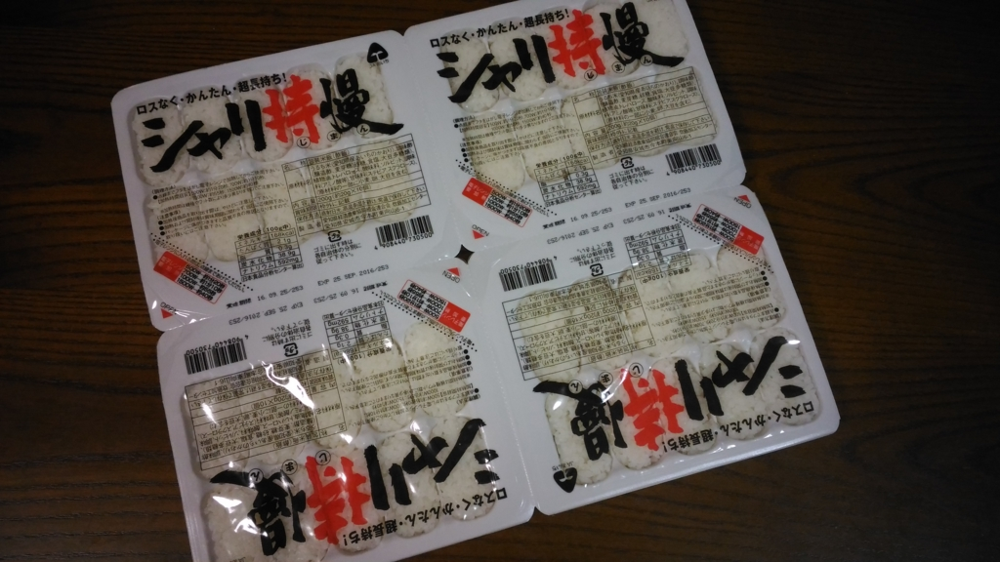
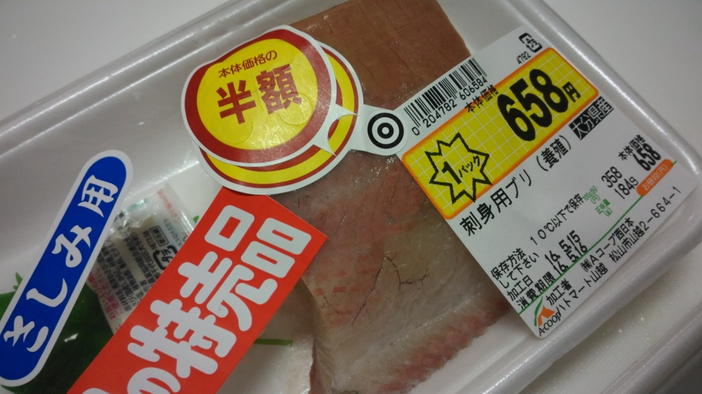
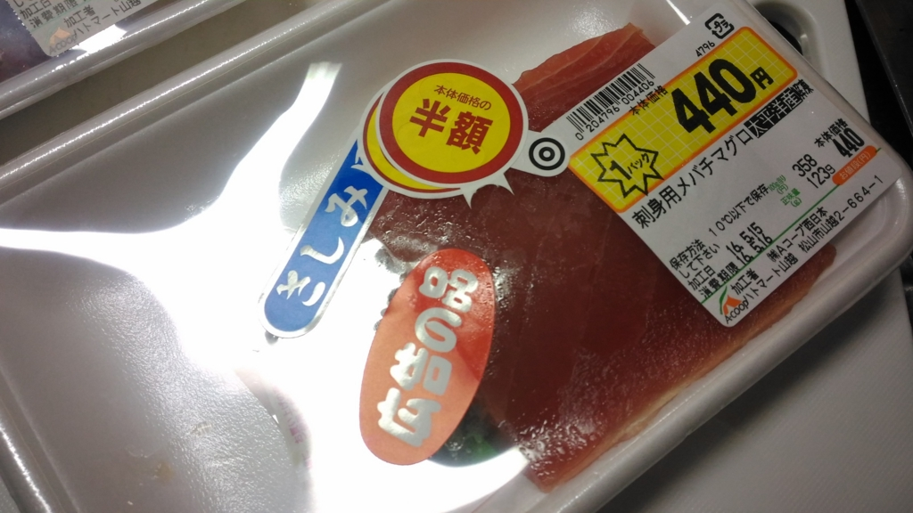
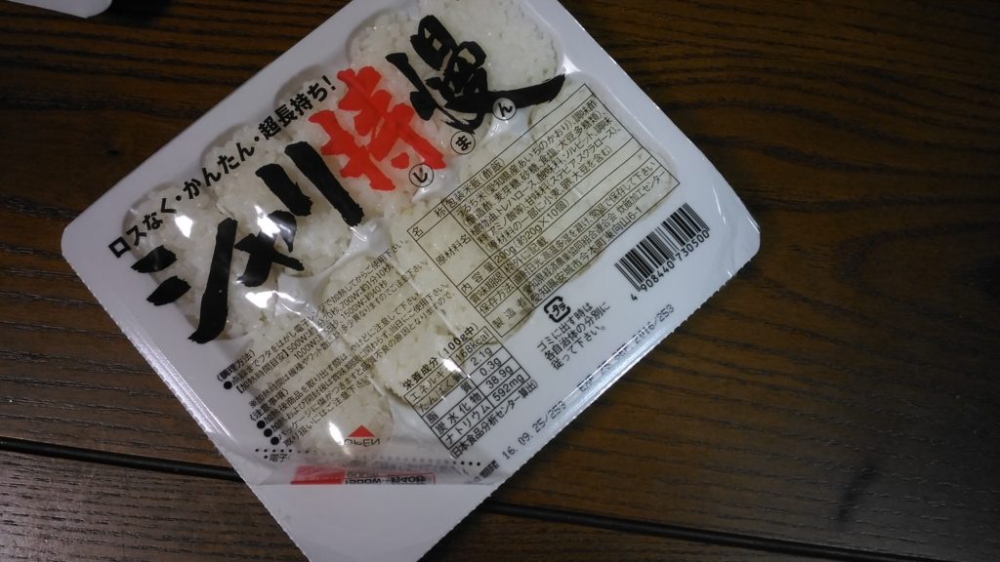
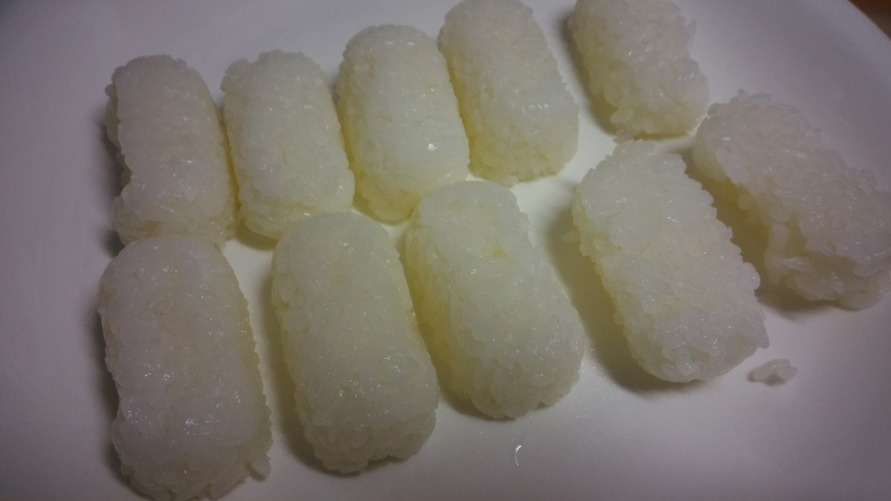
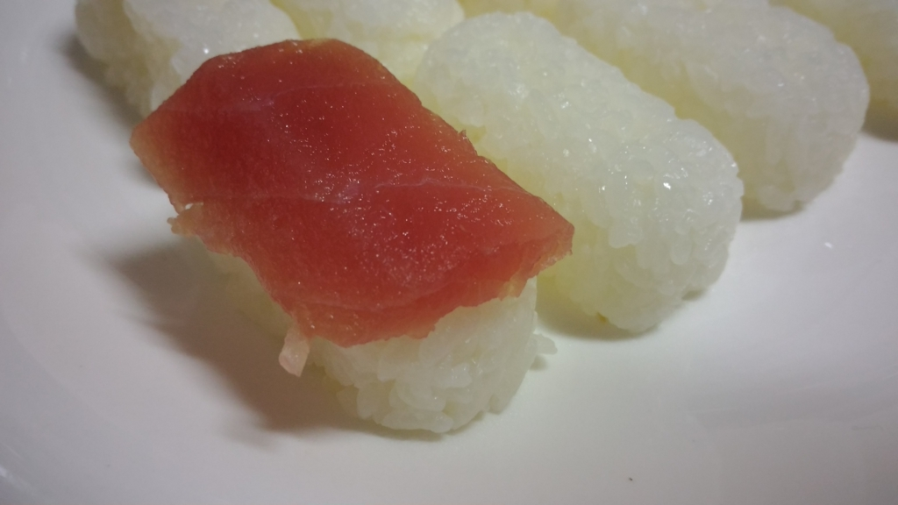
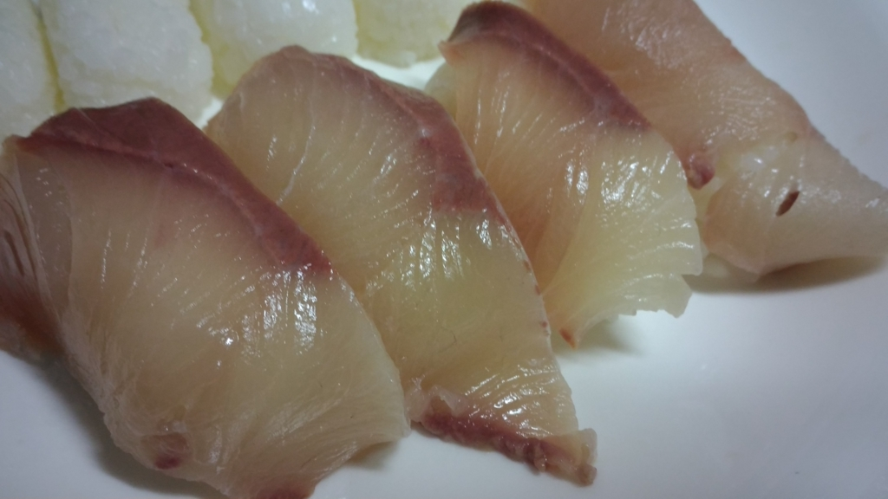

Amazon からなぜか酢飯が送られてきたので、心優しい俺が寿司にしてあげた。
公開日：

Amazon からきた段ボールを開けると、そこにはシャリが広がっていた。だれだ、おれんちに酢飯なんか送ってくるヤツは。
仕方ないので、近所のハトマートでお魚を買ってきた。ちなみに、愛媛・松山とはいえ、スーパーで売ってる魚は東京とそんなに差はない気がする。田舎だから安いとか、海に近いから魚が豊富だとか言ったことは感じない。たぶん、みんなクルマでお魚の市場にでも行くんじゃないだろうか。ただ、ミカンの種類はやたら豊富で、見ているだけでも楽しい。もっとも、筋金入りの愛媛人はミカンを買うことはほとんどなく、みんなもらうのだという。
それはともかく、お魚を選ばなきゃいけない。6時半ぐらいなので、売れ残りしかないんだが……。

まずは特売品のブリをゲット。特売品に半額シールがついていて、お得感が半端ない。ちなみに、大分は海を挟んで愛媛の隣の県だ。きっとフェリーに乗り、八幡浜経由で特急宇和海に乗ってやってきたんだろうな。こんなところで俺に食されるとは哀れな奴め。

次に、マグロをゲット。いつもの夕飯は500円ぐらいが予算なのだが、さすがにブリだけでは寂しいので。
こっちも半額シール付きなのがうれしい。このシールがなければ、二つ足して1,000円をオーバーしていたところだった。半額シール、強い。
そのほかにも、外に出たついでなので野菜や豆腐などを補充。あと、鶏肉が安かったのでデカいパックで買った。1回分ずつ小分けにして、冷凍庫にしまっておくつもり。

家に帰って、お刺身を適当に切る。シャリは電子レンジで一度温めないといけないらしい。フィルムを少しめくって、500Wで1分ほど温めたら、割と熱い。このまま魚を載せたら焼き魚になりそうだったので、扇子であおいで人肌程度に冷やす。実は1パック目は扇風機をつかってみたのだが、端っこのシャリが冷えすぎて、ちょっとパリパリになった。

パックをひっくり返して、シャリに皿にぶちまける。ちょっと小ぶりな感じかな？

試しにマグロを載せてみた。ちょっと寿司っぽくなった。

ブリも載せてみたが。さらに寿司っぽくなった。いい感じで、とてもうれしくなる。
味はスーパーのお寿司の封を開けて、5分ぐらい置いたあとみたいな感じ。回転寿司のレーンに混ぜてみても、鈍感な人なら味の区別はつかないだろうな。すくなくとも自分にはわからないと思う。
というわけで、これは十分に寿司認定していいと思った。こういう寿司だったら、ホリエモンの言う通り、十年も修行しなくても作れるはず。
しかし、醤油に付けるとシャリがすぐバラバラになることには閉口した。醤油皿が米粒だらけになってしまうので、途中からはお寿司に醤油を垂らして食べるようにしたのだが……そこでなんか ﾋﾟｺｰﾝ(｀・ω・´) ときた。
最近、回転寿司屋さんから醤油皿が姿を消しているらしいが……これと関係あったりしてな。
実は、小皿を廃止したのは15年のことになります。それまでも、関西など一部地域では食文化の面から小皿を設置しておりませんでしたが、適量を出すことができるプッシュ式の醤油さしを全店で導入したことに合わせ、全国的に廃止する運びとなりました
まぁ、空いた皿を醤油皿にする人もいるわけで（自分もそうすると思う）、プッシュ式の醤油さし≒シャリに自信がない店というつもりはないが……どうなんだろう。
そんなことを思いながら、2パックすべてを平らげた。あと、ノリで巻いて軍艦みたいにすると、食べやすいという学びを得た。
お魚は食べきらなかったので、一口サイズに切ってタッパーに入れ、醤油（＋ちょっといろいろ）でつけて一晩おいて次の日の昼食に食べた。おいしゅうございました。